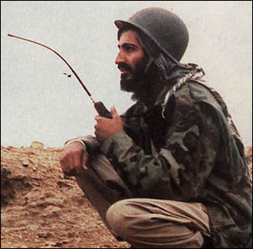
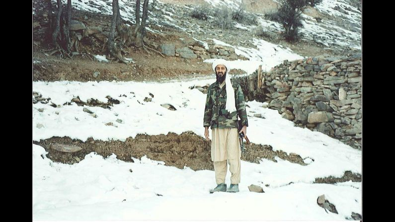

Life Highlights Visual Evidence



A forensic examination of toxic leadership, psychopathic manipulation, and destructive followership in Al-Qaeda under Osama bin Laden, 1988–2011
When Bakan described the modern corporation as pathological, an institution constitutionally incapable of concern for anyone beyond itself, he was writing about boardrooms, not bunkers. Yet his framework maps with unsettling precision onto the world's most notorious terrorist organisation: Al-Qaeda.
Founded by Osama bin Laden in 1988, Al-Qaeda operated as a hierarchical multinational complete with committees, budgets, a global recruitment pipeline, a media wing, and a stated ideological mission; all in service of a leader whose psychology bore the hallmarks of what Hare and Babiak would classify as corporate psychopathy.
This report does not relitigate the geopolitics or theology of jihad. It unmasks the psychological, cultural, and structural dynamics beneath Al-Qaeda's surface, applying the five course frameworks to a case that is deliberately not a boardroom.
If Bakan's externalising machine, Hare and Babiak's psychopathic leader, Kellerman's follower taxonomy, Padilla et al.'s Toxic Triangle, and Harris's organisational evil all apply here; it is because these frameworks describe universal dynamics of power, compliance, and harm, not merely corporate ones.
This is the argument the analogical distance is designed to test: strip away the corporate context, and the same mechanics of manipulation, susceptibility, and structural enablement remain. The organisation changes. The dynamics do not.
Navigate through the dossier using the pages above. Each section is analytically self-contained and directly maps to the course frameworks.

